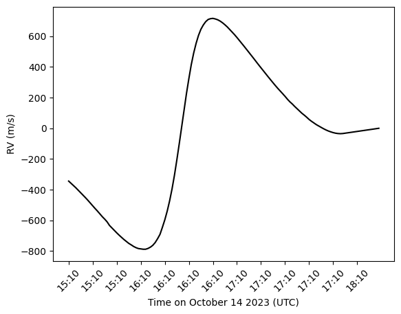

Eclipse Synthesis
GRASS can synthesize the time series of solar spectra observed from the ground during a solar eclipse. As the Moon transits the solar disk, it occults different regions of the rotating, granulating surface, imprinting a characteristic radial-velocity signature (the "Rossiter–McLaughlin"-like distortion) on the disk-integrated line profiles. The eclipse machinery lives in the GRASS.Eclipse submodule and uses SPICE ephemerides to compute the Sun–Moon–observer geometry at each epoch.
The eclipse machinery relies on SPICE kernels (planetary/lunar ephemerides and orientation constants). These are downloaded once by Pkg.build("GRASS") and are furnished into the SPICE kernel pool automatically when GRASS is loaded (using GRASS). If the kernels are missing at load time, GRASS downloads them then — this requires network access and may take some time.
Generating Eclipse Spectra
The eclipse entry point is synthesize_spectra_eclipse. It mirrors the ordinary synthesize_spectra workflow, but takes a DiskParamsEclipse instead of a DiskParams, along with the observer's location and a list of UTC timestamps to evaluate.
using GRASS
using GRASS.Eclipse
using Dates
# spectral synthesis parameters: a single line at 5434.5 Å
λrest = 5434.5
spec = SpecParams(lines=[λrest], depths=[0.75], resolution=7e5)
# build a list of UTC timestamps (one per epoch, here every 15 seconds)
t0 = DateTime("2024-04-08T18:00:00")
time_stamps = [string(t0 + Second(15 * (i - 1))) for i in 1:50]
# eclipse disk parameters; Nt must match length(time_stamps).
# DiskParamsEclipse is not exported, so it must be qualified with the module.
disk = GRASS.Eclipse.DiskParamsEclipse(Nt=length(time_stamps))
# observer location (geodetic longitude/latitude in degrees, altitude in km)
obs_long = -104.0
obs_lat = 30.0
alt = 1.0
# limb-darkening law to use and (optional) extinction coefficient
LD_type = "SSD_quadratic"
ext_coeff = 0.0
# synthesize the eclipse spectra
wavelengths, flux = synthesize_spectra_eclipse(spec, disk, [λrest], LD_type,
obs_long, obs_lat, alt,
time_stamps, ext_coeff)flux is returned with shape (length(wavelengths), disk.Nt) — one spectrum per timestamp. From here, the apparent velocities, bisectors, and other diagnostics can be measured exactly as in Basic Usage.

Limb-Darkening Laws
The LD_type argument selects both the limb-darkening dataset and the functional form. The dataset prefix is one of SSD, 300, or HD, and the suffix is either quadratic (two-coefficient) or 4parameter (four-coefficient Claret-style law):
LD_type | dataset | law |
|---|---|---|
"SSD_quadratic" | SSD | quadratic |
"SSD_4parameter" | SSD | 4-parameter |
"300_quadratic" | 300 | quadratic |
"300_4parameter" | 300 | 4-parameter |
"HD_quadratic" | HD | quadratic |
"HD_4parameter" | HD | 4-parameter |
The coefficients are looked up by wavelength, so each entry in the wavelength argument must be present in the corresponding limb-darkening coefficient table.
API Reference
Full signatures and argument descriptions for synthesize_spectra_eclipse and DiskParamsEclipse are listed in the Full Index under GRASS.Eclipse.